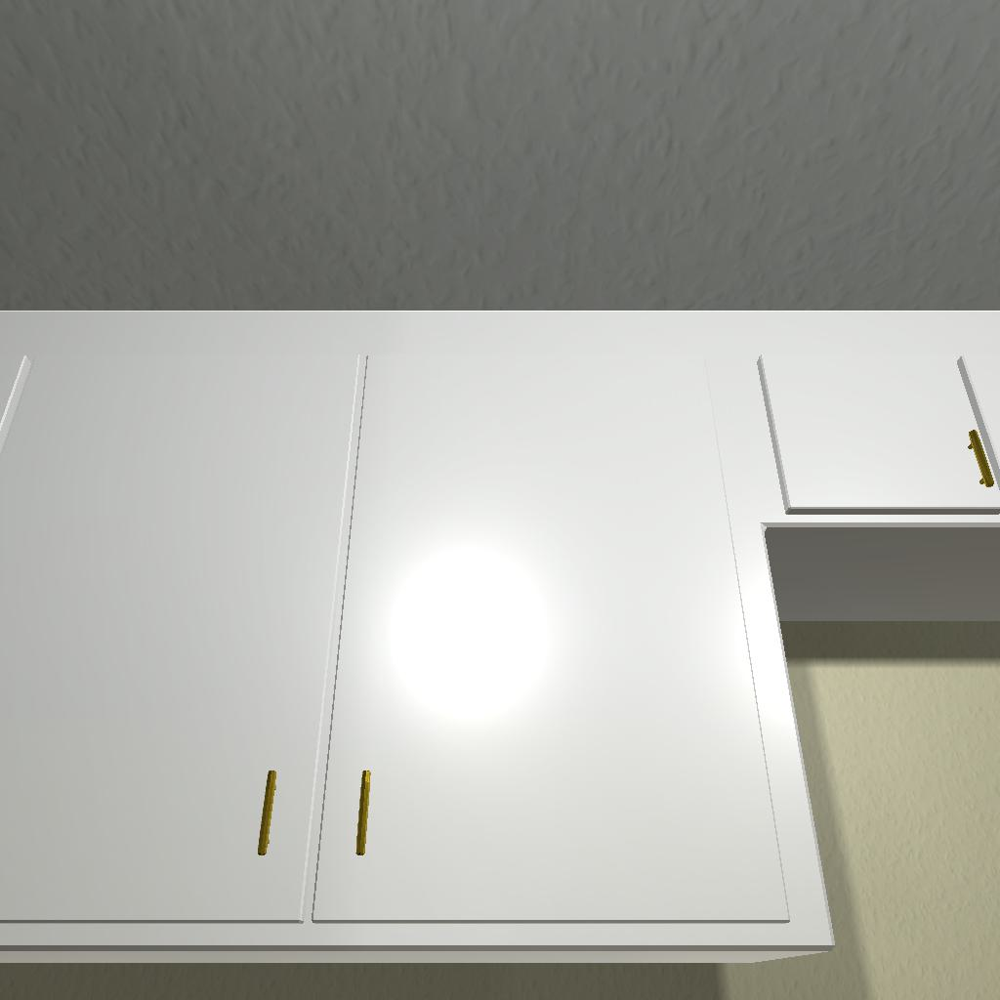

---------------------------------------------------------task: 18---------------------------------------------------------
--------------------------------------------------------------------------------------------------------------------------------------------------------------------
--------------------------------------------------------------------------------------------------------------------------------------------------------------------
Step:--------------------------------------------------------------------------11-------------------------------------------------------------------------------
----------------------------------------
VLM Prompt:
Image1:
Image2:
**Instruction**
1. Analyze the provided images to identify all visible household objects and compare the difference between images (e.h. whether the object is opened or not and taken on hand or not), focusing on those relevant to the task description "put a cool pot in cabinet."
2. Use the analysis of images and the task hint "The agent must find an object of the desired type, pick it up, go to a fridge, cool the object with the fridge, then find the correct location to place it, and put it down there. The agent does not need to use the fridge button or open the fridge to cool the object, and the agent just needs to do action that is "cool the object with the fridge"." to answer the question: what is the most reasonable action in the choices for the task description "put a cool pot in cabinet"?
3. Decide and write the answer using the template: The answer is: (i): , where i is the real number. If there is no desired object in images, search every place based on **Initial Observation** to find the object. And if no one is exactly correct, choose a similar answer.
**Initial Observation**
You are in the middle of a room. Looking quickly around you, you can see cabinet (1-20), countertop (1-3), coffeemachine (1), toaster (1), sink (1), fridge (1), microwave (1), garbagecan (1), drawer (1-3), sinkbasin (1), stoveburner (1-4), shelf (1-3)
**Answer Choices**
(1): go to cabinet 3
(2): go to cabinet 4
(3): go to cabinet 5
(4): go to cabinet 6
(5): go to countertop 1
(6): go to coffeemachine 1
(7): go to cabinet 7
(8): go to toaster 1
(9): go to cabinet 8
(10): go to sink 1
(11): go to fridge 1
(12): go to microwave 1
(13): go to garbagecan 1
(14): go to cabinet 9
(15): go to cabinet 10
(16): go to countertop 2
(17): go to cabinet 11
(18): go to cabinet 12
(19): go to drawer 1
(20): go to countertop 3
(21): go to drawer 2
(22): go to cabinet 13
(23): go to sinkbasin 1
(24): go to cabinet 14
(25): go to drawer 3
(26): go to stoveburner 1
(27): go to stoveburner 2
(28): go to stoveburner 3
(29): go to cabinet 15
(30): go to stoveburner 4
(31): go to cabinet 16
(32): go to cabinet 17
(33): go to cabinet 18
(34): go to cabinet 19
(35): go to cabinet 20
(36): go to shelf 1
(37): go to shelf 2
(38): go to shelf 3
(39): open cabinet 2
(40): close cabinet 2
(41): examine cabinet 2
**Answer**
Let's think step by step by following the instructions.
----------------------------------------
----------------------------------------
Original Response:
Firstly, we analyze the images provided:
Image 1: We observe upper cabinets with closed doors, there are no pots visible, and nothing seems to be taken in hand. The image is too zoomed in to identify the cabinet numbers, but we can assume they are part of the cabinets 1-20.
Image 2: Similar to Image 1, we see upper cabinets with closed doors, no visible pots, and nothing taken in hand. The perspective is slightly different, but the contents remain the same. Again, the image is too zoomed in to identify the cabinet numbers.
Comparing both images, there is no difference in the state of the objects regarding being opened or taken in hand. Therefore, we can conclude that no action has been taken between the two images.
Considering the task description "put a cool pot in cabinet" and the hint provided, the agent must first find a pot. Since no pot is visible in the images, the agent must search every place based on the initial observation to find the object.
Given that the agent needs to cool the pot with the fridge, the most logical step would be to go to the fridge first. However, the answer choices do not include an action to pick up a pot or cool it with the fridge. Therefore, we must select the action that follows the completion of cooling the pot, which is finding the correct location to place it.
Among the answer choices, the only reasonable actions are those related to going to a cabinet, as the task is to put a cool pot in a cabinet. Since we do not have information about which cabinet the pot should go into, we must make an assumption.
The answer is: (3): go to cabinet 5. This choice is arbitrary since there is no specific information to determine which cabinet is the correct one. If there was a pot visible in the images or a specific cabinet number mentioned in the task description, the answer could be different.
----------------------------------------
----------------------------------------
>>> Refine Original VLM Response and Get Pure Action: go to cabinet 5
----------------------------------------
-----------------------------------------------------------------
Running time: 36.640615940093994 seconds
Total Money: 8.929770000000003
-----------------------------------------------------------------
-----------------------------------------------------------------
Text Observation:You arrive at loc 4. The cabinet 5 is closed.
-----------------------------------------------------------------
UNSUCCEED